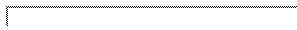

A face contains pointers to three vertices whose order defines the counterclockwise order. It further contains three pointers to neighbor faces.
The vertices and neighbors are indexed 0,1, and 2. Neighbor lies opposite to vertex i.
| Face::Vertex | |
|
Vertex type.
| |

For
user defined triangulation algorithms, faces need to be explicitly
constructed and linked to their neighbors.
| Face f; | |
|
Introduces a variable f and initializes all vertices and
neighbors with NULL.
| |
| Face f ( Vertex* v0, Vertex* v1, Vertex* v2); | |
|
Introduces a variable f, and initializes the vertices. The
neighbors are initialized with NULL.
| |
| Face f ( Vertex* v0, Vertex* v1, Vertex* v2, * n0, * n1, * n2); | |
|
Introduces a variable f, and initializes the vertices and
the neighbors.
| |
| void | f.set_vertex ( int i, Vertex* v) | |
|
Set vertex i to be v.
Precondition: . | ||
| void | f.set_neighbor ( int i, * n) | |
|
Set neighbor i to be n.
Precondition: . | ||
| Vertex* | f.vertex ( int i) |
Returns the vertex i of f.
Precondition: . |
| int | f.index ( Vertex* v) |
Returns the index of vertex v in f.
Precondition: v is a vertex of f |
| bool | f.has_vertex ( Vertex* v) | Returns true if v is a vertex of f. |
| bool | f.has_vertex ( Vertex* v, int& i) | |
| Returns true if v is a vertex of f, and computes the index i of the vertex. | ||
The neighbor with index i is the neighbor which is opposite to the vertex with index i.
| Face* | f.neighbor ( int i) |
Returns the neighbor i of f. The result can be
NULL.
Precondition: . |
| int | f.index ( * n) |
Returns the index of face n.
Precondition: n is a neighbor of f. |
| bool | f.has_neighbor ( * n) | Returns true if n is a neighbor of f. |
| bool | f.has_neighbor ( * n, int& i) | |
| Returns true if n is a neighbor of f, and compute the index i of the neighbor. | ||
The three vertices of a face are indexed with 0, 1 and 2. This order defines a counterclockwise order. Given an index of a vertex the following functions allow to compute the index of the (counter-) clockwise neighbor vertex.
| int | f.ccw ( int i) |
Returns modulo 3.
Precondition: . |
| int | f.cw ( int i) |
Returns modulo 3.
Precondition: . |
Note that the functions are member functions although they do not depend on the actual face.
Note further that \ccVar.neighbor(\ccVar.ccw(i)) is the neighbor of f, turning counterclockwise around vertex i of f and that \ccVar.vertex(\ccVar.ccw(i)) is the vertex of f, turning counterclockwise inside f from vertex i .

It
is in your responsibility to keep a triangulation valid, if you use the
advanced operations. Obviously you have to make a triangulation invalid
at times in order to implement higher level algorithms. To help you in
the development of new triangulation classes, CGAL provides a predicate
to verify the validity of the constructed structure. This function
serves mainly for debugging.
| bool | f.is_valid () | Returns true if the triangle shares two vertices with its neighbors, and these neighbors have a correct reciprocal neighboring link and coherent orientations. It further checks if f is in the adjacency list of each of its three vertices, and if the vertices point to the right face if they are on the boundary. |
The following operations allow to modify the abstract triangulation while keeping a valid triangulation, that is the neighbor pointers and the face pointer of the vertices are updated as well. Of course these modifications do not necessarily preserve geometric properties of the triangulation.
| void | f.flip ( int i) |
Flips f with f.n = neighbor(i). Let j
be n->index(f) before the flip. The vertices i and
ccw(i) of face f do not change. The same holds for
the vertices j and ccw(j) of n.
Precondition: , and f.neighbor(i) exists. |

| void | f.insert ( Vertex* v) | Splits f in three faces, by modifying f and by creating two new faces. Vertex v becomes vertex 0 of f. |

| void | f.insert ( Vertex* v, int i) | |
|
Adds a triangulation face to the triangulation, that becomes
neighbor of f.
Precondition: f has no neighbor . | ||

The following vertex removal function is the inverse operation of both insertion functions.
| bool | f.remove ( Vertex &*v) |
Removes v from the triangulation, if one of the two
conditions is fulfilled. Precondition: Node v is not on the boundary and has degree 3 or node v is on the boundary and has degree 2 and f has a neighbor face. In the first case three triangles are merged to one triangle. The two triangles that are adjacent to f and v are deleted. In the second case vertex v and face f are deleted. The function returns true and sets v to NULL, if the removal was successful. |